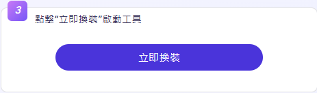

AI 換衣工具
Vidnoz AI 提供 AI 換衣比對功能，透過 AI 技術模擬不同服裝風格，讓使用者輕鬆測試各種穿搭效果。
以下是 Vidnoz AI 換衣工具的基本流程：
使用步驟
步驟 2：選擇或上傳服裝樣式
Vidnoz AI 提供內建服裝庫（如商務、西裝、休閒、運動、晚禮服等）。
使用者也可以上傳特定服裝圖片，讓 AI 進行比對與替換。
步驟 3： AI 進行服裝替換
AI 透過智能識別人體與服裝結構，自動調整衣物與人物姿勢，使換裝效果自然、貼合身形。

步驟 4：調整細節 (如果不滿意搭配所選)
可再手動調整服裝，使整體視覺更符合需求，進行對比。
步驟 5：下載與應用
完成後，可下載圖片，或直接分享到社群媒體、購物平台、個人造型設計等用途。
成品
Vidnoz AI 換衣比對 功能適用於 時尚搭配、網購試衣、商業攝影、社交媒體內容創作，讓穿搭選擇更直觀便捷！

注意事項
- 照片要求：確保上傳的圖片清晰，最好是正面照，能更準確地顯示換裝效果。
- 隱私政策：了解如何處理和儲存上傳的照片，確保個人隱私受到保障。
- 使用條款：遵守網站的服務條款，避免非法或不當的使用行為。
返回首頁